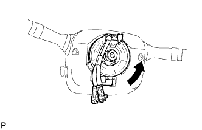
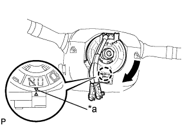

ДАТЧИК УГЛА ПОВОРОТА РУЛЕВОГО КОЛЕСА > УСТАНОВКА |
| 1. УСТАНОВИТЕ ВИТОЙ КАБЕЛЬ С ДАТЧИКОМ УГЛА ПОВОРОТА РУЛЕВОГО КОЛЕСА |
| 2. УСТАНОВИТЕ КОЖУХ РУЛЕВОЙ КОЛОНКИ |
Для моделей с наклонной телескопической рулевой колонкой с ручным приводом:
(Нажмите здесь).
Для моделей с наклонной телескопической рулевой колонкой с электроприводом:
(Нажмите здесь).
| 3. ОТРЕГУЛИРУЙТЕ ВИТОЙ КАБЕЛЬ |
Выключите зажигание.
Отсоедините провод от отрицательного (-) вывода аккумуляторной батареи.
|  |
Медленно поворачивайте рукой узел витого кабеля с датчиком положения рулевого колеса против часовой стрелки до упора.
|  |
После этого поверните витой кабель с датчиком положения рулевого колеса по часовой стрелки примерно на 2,5 оборота для совмещения меток.
| *a | Метка |
| 4. УСТАНОВИТЕ РУЛЕВОЕ КОЛЕСО В СБОРЕ |
| 5. ПОДСОЕДИНИТЕ ПРОВОД К ОТРИЦАТЕЛЬНОМУ ВЫВОДУ АККУМУЛЯТОРНОЙ БАТАРЕИ |
| 6. ПРОВЕРЬТЕ КОНТРОЛЬНУЮ ЛАМПУ АВАРИЙНОГО СОСТОЯНИЯ SRS |